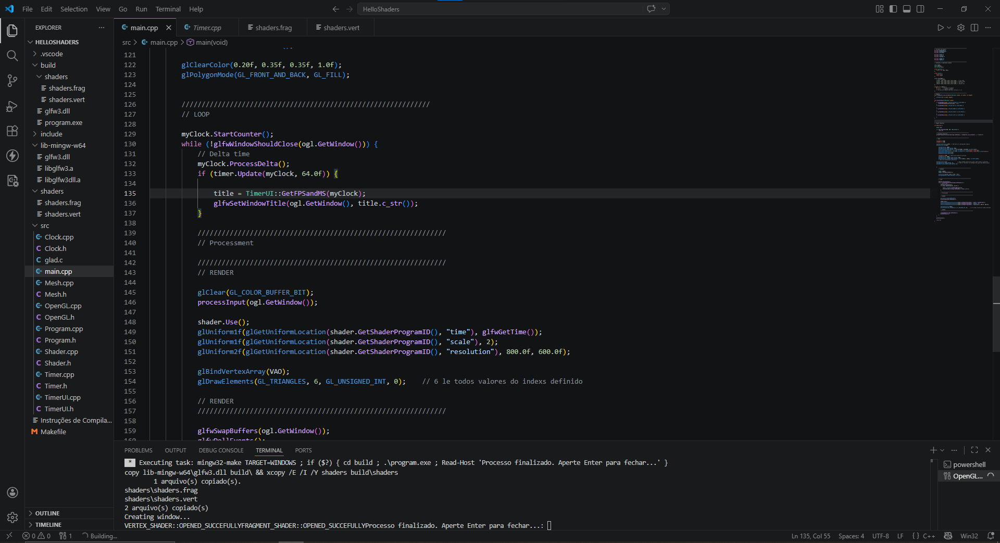
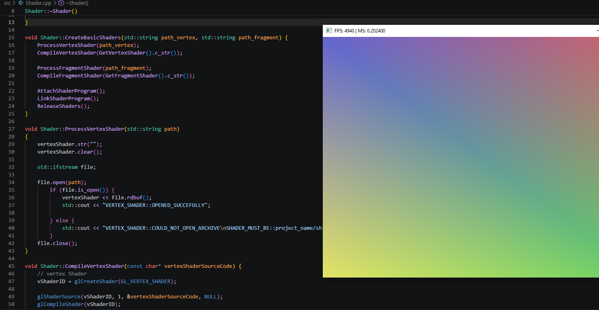
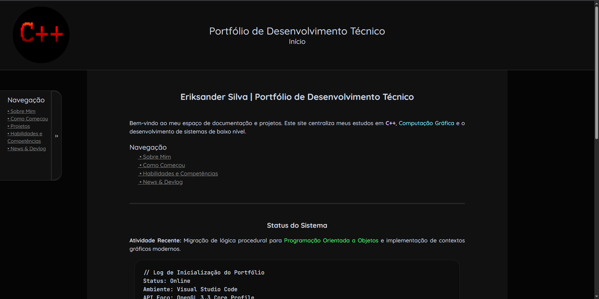

News & DevLog
Página: 1
Registro cronológico de atualizações, marcos de estudo e progresso técnico.
DATA: 25 de Abril, 2026
ASSUNTO: Registro da semana
ASSUNTO: Registro da semana
Progresso no Currículo online e OpenGL
Aqui vou resumir meu progresso nos estudos de programação web e computação gráfica dessa semana (18/04/2026 - 25/04/2026).
Currículo Online
Nessa última semana eu não tive muito tempo para atualizar o site, vou tentar manter uma rotina de atualizar pelo menos uma vez por semana; no entanto, houveram algumas mudanças:
• Adicionei páginas Contato e Ferramentas (falta preencher); serão sobre contato e ambiente de estudos, respectivamente.
• Adicionei seção de páginas com JavaScript na página News & DevLog.
• Correção de pequenos erros em dispositivos portárteis.
• Porte de interface para mobile (incompleto).
Entre outras outras coisas.
No momento, devido à escola e foco na computação gráfica, este site pode ter poucas atualizações, mas constantemente vou tentar fazer correções e adicionar funcionalidades.
OpenGL e Computação Gráfica
Nessa semana foquei muito nos estudos de OpenGL: até domingo passado eu estava na seção "Hello Triangle" do learnopengl.com,
mas fiz um intensivo de oito horas e saí da seção, nos dias seguintes fiz atividades de consolidação de conteúdo, tais como implementação de classe Shader, Timer, Clock, TimerUI e OpenGL,
cada um com suas responsabilidades.
Shader, como o próprio nome diz, controla todo o ciclo de shaders e abstrai o boilerplate (você pode visualizar meu código aqui),
leitura de shader externos, compilação, anexação e linkagem no programa de shaders, além de funções utilitárias. Clock por sua vez cuida do DeltaTime, Timer cuida da atualização para
o TimerUI, e TimerUI, cuida da saída de dados, em complemento do Timer. Fiz também uma classe OpenGL, apenas para abstrair e organizar o boilerplate da inicializção. Este foi um ótimo exercício para
consolidar o aprendizado.

Atualmente, no dia 25 de Abril, estou estudando shaders na seção de Shaders. Após ter consolidade relativamente bem o ciclo e componentes necessários, acredito estar pronto para seguir.
Acredito que esperar estar perfeito não é necessário e seguir praticando consolidará ainda mais. Ontem eu consegui me reestabelecer nos estudos e comecei a estudar shaders; fiz até um
shader simples sem o "copia e cola". Aprendi VAO, VBO, EBO, atributos e leitura de vértices.

Resumo
Mudanças no site, mudança de rotina, aprendizado de shaders e ciclo VAO, VBO e EBO; esta foi a minha semana. Logo vou criar e colocar um email para contato, se tiver alguma dica, crítica
ou algo do tipo, sinta-se livre para me enviar.
DATA: 19 de Abril, 2026
ASSUNTO: Passos finais da criação do blog/currículo online
ASSUNTO: Passos finais da criação do blog/currículo online
Primeiro post do site
Bom, como podemos ver, o site está quase pronto. Optei por cores escuras e design relativamente simples, é um site de HTML estático, não vi necessidade de JavaScript ou grandes animações. Ainda tenho
de terminar as outras páginas e preencher.
Pensei se deveria escrever em inglês ou português; se seguirmos o padrão mundial devo colocar inglês, mas não confio na minha gramática. Vou estudar mais e melhorar na escrita antes de trocar o idioma do site.
Este é um post de inauguração, na aba de DevLog; regularmente vou postar informações relevantes do meu progresso nos estudos.

Ainda há correções a serem feitas. Veja tela inicial:
